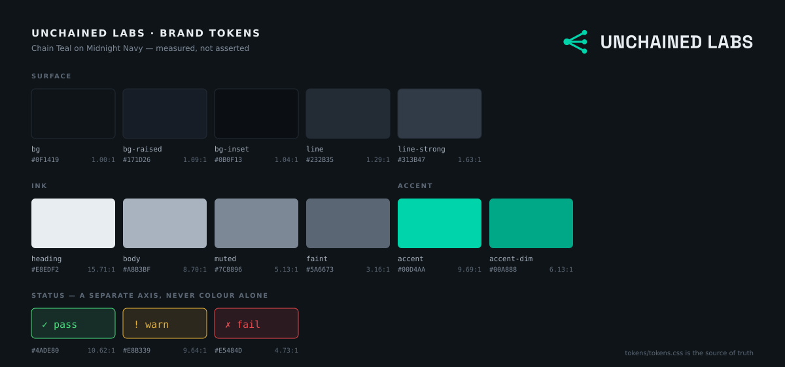

Brand system
Chain Teal on Midnight Navy.
The single source of truth for colour, mark, type and voice across every Unchained Labs project. Every ratio on this page is measured, and the docs are tested against the measurement.
- v1.0
- 43 contrast claims verified
- MIT tokens
Palette
Measured, not asserted
Neither colour is new — both were already the palette of
unchainlabs.xyz and the four Kymatics services. What this system
added is a measured ink ramp, a status axis that does not collide with the
brand, and tooling that fails CI when any of it drifts.

tokens.json — the image cannot disagree with the tokens.Surface and ink
Two tokens sit below the AA body floor on purpose.
--ul-line at 1.29:1 is a hairline — it separates regions and
never spells anything. --ul-faint at 3.16:1 clears AA for
large text and fails it for body; it is for 20px-and-up labels and
disabled controls. Find it on a sentence and that is a bug.
Status is a separate axis
These products exist to answer did it pass? That answer never shares a colour with the brand.
- pass
- warn
- fail
The tension we did not design away. Chain Teal sits at hue 168°, status-pass at 142° — only 26° apart. That is the direct cost of inheriting a blue-green accent instead of picking a fresh one, and the alternatives were worse: yellower collides with warn, blue breaks the pass-is-green convention, and changing the accent orphans five shipped products.
So the constraint is handled rather than hidden: status is never encoded in colour alone. Every pass/warn/fail carries a glyph or a word — required for red-green colour vision deficiency regardless of hue spacing, so the 26° problem forced a practice we owed users anyway.
Mark
A fan-out
One heavy node, three edges, three light nodes. The thesis
of every tool here is that linear execution is a chain and the real work is a
graph — so the mark is the shape that replaces the chain, not a
broken version of it. Read as a glyph it is a <, where an
argument opens.
 lockup-horizontal
lockup-horizontalIt survives 16px
The binding constraint on all nine candidates. Four died on this test and two of those four looked best at large sizes.
The geometry is
computed, not drawn: the generator solves each edge's endpoints onto the node
circumference so no stroke pokes through at any size. The lockups contain no
<text> elements and no font references — the wordmark is
real outline paths, so it renders identically on a machine that has never
heard of Space Grotesk.
Type
Three faces, three jobs
A reader should be able to tell what kind of information they are looking at before they read a word of it.
Display · Space Grotesk 700
Linear is a chain
Body · Inter 400
The docs in this org are written, not generated, and they make claims that need to be read at length. A reader working through 400 words of reasoning should be doing it in a face designed for exactly that.
Data · JetBrains Mono 400
$ decorrelate report runs.jsonl
verifiers 3 N_eff 1.2
fleiss κ 0.81 high agreement, low independenceData gets its own face, and that is load-bearing. These products report measurements. A cost estimate in Inter reads as a claim; the same estimate in JetBrains Mono reads as output. Mixing them up undermines the one thing these tools sell.
Use it
Style through the properties
<link rel="stylesheet" href="tokens.css">
<link rel="stylesheet" href="brand.css">Never hard-code a hex in an app repo. The
accent legitimately changes value between modes — #00D4AA is
1.91:1 on white and unreadable as text, so light mode uses
#007D66. A hard-coded teal is a light-mode bug waiting to ship.
palette.md
The ramp, the accent budget, the status collision, every measured ratio.
logo.md
Construction, sizing, clear space, misuse.
typography.md
Four roles, the scale, why data gets its own face.
voice.md
Numbers over adjectives. Name the cost. No marketing register.
palette-study.md
Five directions considered, and why four lost.
mark-options.md
Nine candidates, the shortlist, the rejects.
Everything here is checked
$ make check
ok 19 dark + 16 light colour tokens, all clear their contrast tier
ok 43 contrast claims in tokens.css + brand/*.md all match measurementverify-docs exists because the ratios in
palette.md were wrong twice while this repo was being written —
estimated by eye, then stated in a table as if measured. A brand doc that
asserts a wrong ratio is worse than one that asserts none, because the wrong
one gets trusted. So the docs are tested now.